A permutation is one possible ordering of a set of n objects. For example, given the set {a, b, c}, the following permutations are possible.
To calculate the number of permutations possible, consider how you would go about creating one of the permutations in the example above. For the ...
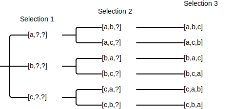
For the example above, there are 3!=3*2*1=6 different permutations available. Given a set of n objects, the number of permutations is n!. [FCP:p3]
def count_permutations(n: int) -> int:
return factorial(n)
count_permutations(3)=6
Given n objects that have been broken up into k groups, a grouped permutation is on possible ordering of those grouped objects. In this case, "order" includes both the order of the groups themselves as well as order of the objects in the group. For example, imagine you're organizing a set of books on a book shelf, where each book is on a specific topic:
The goal is to determine how many arrangements are possible under the condition that books on the same topic are grouped together. Because each arrangement requires that books of same topic group together, you first need to determine the number of permutations per topic:
Then, you need to determine the number of arrangements for the topic groups. If the topic groups are arranged as the shown in the list above (math, chem, history, and language), there are 4!*3!*2!*1! ways the books themselves can be arranged.
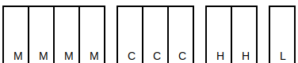
Likewise, if the topic groups were arranged in some other order (e.g. chem, math, history, and math), there are still 3!*4!*2!*1! ways the books themselves can be arranged, which is equivalent to 4!*3!*2!*1!.
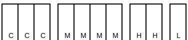
Regardless of how you arrange topic groups, each arrangement has 4!*3!*2!*1! ways in which the books themselves can arrange. Since there are 4! different ways to arrange topic groups, there are 4!*(4!*3!*2!*1!) there are ways the books can be arranged.
The number of grouped permutations is calculated as k!*(n1!*n2!*...*nk!), where k is the number of groups and n1...nk are the number of objects in each group. [FCP:p4]
def count_grouped_permutations(n_list: list[int]) -> int:
k = len(n_list)
product = 1
for n in n_list:
product *= count_permutations(n)
product *= k
return product
count_grouped_permutations([4, 3, 2, 1])=1152
A permutation with repetition is one possible ordering of a set of n objects, where orderings don't distinguish between alike objects. For example, consider the different ways in which you can re-arrange the letters of APPLE. If you treat each letter as a distinct object, there are 5 objects and as such there are 5!=120 different permutations:
However, if you treat multiple instances of the same letter as alike objects, the number of permutations reduces. For example, [A1, P1, P2, L1, E1] and [A1, P2, P1, L1, E1] would qualify as the same permutation because, if all Ps are alike to each other, there is no difference between those two the permutations.
To determine the reduced number of permutations (permutations with repetition), first determine the number of permutations for just the Ps themselves: 2!=2. For each of the original 5!=120 permutations, there will always be a mirror permutation where P1 and P2 are swapped (e.g. [A1, P1, P2, L1, E1] and [A1, P2, P1, L1, E1]). In other words, there will always be 2 permutations that represent the same thing. As such, the reduced number of permutations is 5!/2!=60.
When there are multiple classes of alike objects, the concept works similarly. The divisor becomes the multiplication of number of permutation for each class. For example, imagine the word PEPPER instead of APPLE: [P1, E1, P2, P3, E2, R1]. First, determine the number of permutations for each letter:
The reduced number of permutations is 6!/(3!*2!*1!).
The number of permutations with repetitions is calculated as n!/(n1!*n2!*...*nk!), where n1...nk is the count of each distinct object (e.g. the number of Ps in APPLE). [FCP:p4-5]
# Each index in object_repetitions represents a unique object, where the value at that index is the number of times that
# object repeats. For example, PEPPER may be represented as [1,3,1], where index ...
# * 1 is the repetition count for E (2 time)
# * 2 is the repetition count for P (3 times)
# * 3 is the repetition count for R (1 time)
def count_permutations_with_repetitions(object_repetitions: list[int]) -> int:
numerator = count_permutations(sum(object_repetitions))
denominator = 1
for repetitions in object_repetitions:
denominator *= count_permutations(repetitions)
return numerator // denominator
count_permutations_with_repetitions([2, 3, 1])=60
A combination is one possible subset of size r from a set of n objects. For example, given the set {a, b, c, d, e}, the following subsets of size 3 are possible.
⚠️NOTE️️️⚠️
Recall that sets and subsets have no order. The lack of order is an essential part of combinations.
To calculate the number of combinations possible, consider how you would go about selecting a subset of size 3 in the example above. For the ...
The diagram below shows all the possible selections, of which there are 5*4*3=60.
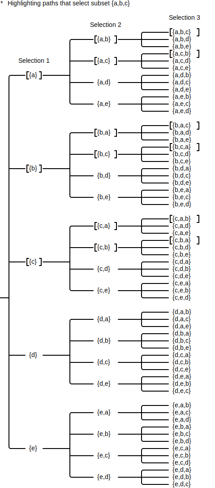
Of those 60 selections, note that multiple selections represent the same subset. For example, the subset {a, b, c} appears 3!=3*2*1=6 times in total. Given that you're trying to select the subset {a, b, c}, for the ...
Regardless of which subset of size 3 you choose, whether it's {a,b,c}, {b,c,d}, {b,c,e}, or some other subset, there will always be 3!=6 duplicates of that subset in the diagram.
When enumerating all possible selections for a subset of size r, as in the diagram above, the selection process will duplicate each subset r! times. To remove those duplicates from the count, divide the number of all possible selections by r!: . For the example above, there are different combinations available.
The notation for the formula above is , read as "n choose r". Often times, the formula is rewritten as the equivalent fraction . [FCP:p5]
⚠️NOTE️️️⚠️
How is it that ? Both the numerator and denominator are being multiplied by : . The numerator can then be condensed as n!: .
⚠️NOTE️️️⚠️
The book mentions that it's convenient to define 0! as 1.
The reason for is that, in a set of size n, there is exactly 1 subset of size n. Likewise, the reason for is that, in a set of size n, there is exactly 1 subset of size 0.
The book also mentions that when r is out of bounds (r < 0 or r > n). It doesn't say why.
def count_combinations(n: int, r: int) -> int:
if r < 0 or r > n:
return 0
elif r == n or r == 0:
return 1
return factorial(n) // (factorial(n-r) * factorial(r))
count_combinations(5, 3)=10
Pascal's identity states where . One way to reason about Pascal's identity is to consider a basketball coach choosing 5 of his 10 team members to go play: . One of those team members is named Steve. If the coach opts to ...
Combining these two scenarios together means that the coach is indecisive about Steve, meaning Steve can potentially be included in the 5 team members that go up just like each of the other 9 players: . [FCP:p7]
Another way to think about about Pascal's identity is using Pascal's triangle. Pascal's triangle is a triangle of stacked numbers where ...
1
1 1
1 2 1
1 3 3 1
1 4 6 4 1
Each of these numbers is the result of , where the ...
C(0,0)
C(1,0) C(1,1)
C(2,0) C(2,1) C(2,2)
C(3,0) C(3,1) C(3,2) C(3,3)
C(4,0) C(4,1) C(4,2) C(4,3) C(4,4)
Other than the number at the very top and the numbers along the left and right edges (all 1s), each number in Pascal's triangle is a sum of the two numbers immediately above it. For example, in the triangle above, the 2nd number of the last row is , which is a sum of the two numbers immediately above it: .
This summation is Pascal's identity. Given a position in Pascal's triangle, where that position is not at the top and not along the left or right edge, that position is the sum of the two numbers immediately above it: . [WIKI:Pascal's Triangle].
def count_combinations_via_pascal_recurrence(n: int, r: int) -> int:
if n == 0:
return 1
if r == 0 or r == n:
return 1
return count_combinations_via_pascal_recurrence(n - 1, r - 1)\
+ count_combinations_via_pascal_recurrence(n - 1, r)
count_combinations_via_pascal_recurrence(4, 3)=4
count_combinations(4, 3)=4
Given a binomial that's been raised to some power, a binomial coefficient is the coefficient of a term in the expanded form of that raised binomial. For example, the raised binomial expands out to , which has the binomial coefficients [1, 4, 6, 4, 1].
Combinations such as are often referred to as a binomial coefficient (e.g. is a binomial coefficient). The reason is that, in the expanded form of a raised binomial, the coefficients map to a row within Pascal's triangle. For example, the binomial above maps to the 5th row of Pascal's triangle: [1, 4, 6, 4, 1].
Pascal's triangle Pascal's triangle in combination notation
1 C(0,0)
1 1 C(1,0) C(1,1)
1 2 1 C(2,0) C(2,1) C(2,2)
1 3 3 1 C(3,0) C(3,1) C(3,2) C(3,3)
1 4 6 4 1 C(4,0) C(4,1) C(4,2) C(4,3) C(4,4)
Since Pascal's triangle can be written in combination notation, the binomial coefficients in the expanded expression can be written in combination notation as well. In the example above, can be rewritten as .
In general, given a binomial raised to the power of n (non-negative integer), its binomial coefficients map to row n+1 of Pascal's triangle. [FCP:p7-9] [WIKI:Binomial Coefficient]
def binomial_coefficients(exp: int) -> list[int]:
ret = []
for r in range(exp + 1):
c = count_combinations(exp, r)
ret.append(c)
return ret
binomial_coefficients(4)=[1, 4, 6, 4, 1]
⚠️NOTE️️️⚠️
The book shows the binomial theorem as .
A multinomial coefficient is the number of ways that a set of n objects can be divided into r subsets. The subsets can have different sizes, but in total they must cover all objects in the original set: .
To understand how, consider counting how many different ways there are of organizing 10 books across 3 bookshelves, where ...
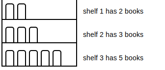
In total, there are different ways of grouping the books across the shelves. You'll get this same number even if you re-arrange which shelf appears first / re-arrange which shelf you start placing books on first. For example, had you chosen to start placing books in the opposite order (shelf 3, then 2, then 1), the number of ways would be exactly the same: .
The reasoning above, once simplified, in the example above is generalized as the formula , where . The variable n is the number of objects in the set and the variables g1...gn map to the individual group sizes: .
⚠️NOTE️️️⚠️
This is the way the book shows the simplification.
The name multinomial coefficient comes from the fact that the formula can be used to determine the coefficient in the expanded form of a multinomial raised to some power. For example, the raised binomial expands out to , which has the multinomial coefficients [1, 4, 6, 4, 1]. Each coefficient in the expanded expression (multinomial coefficient) can be calculated using the formula mentioned above: , where . The variable n is the exponent of the multinomial while the variables g1...gr map to the exponents within a term in the expanded expression. For example, ...
expands out to , which can be rewritten as .
expands out to , which can be rewritten as .
Note the mapping between the coefficient's notation and value. For example, the first term in the example above is , which is essentially . The exponents of x, y, and z map to the group sizes in the notation: .
def multinomial_coefficient(exp: int, group_counts: list[int]) -> int:
assert sum(group_counts) == exp
num = factorial(exp)
denom = 1
for g in group_counts:
denom *= factorial(g)
return num // denom
def multinomial_coefficients(exp: int, nomial_count: int) -> list[int]:
ret = []
for term_exponents in product(range(exp+1), repeat=nomial_count):
term_exponents = list(term_exponents)
if sum(term_exponents) != exp:
continue
c = multinomial_coefficient(exp, term_exponents)
ret.append(c)
return ret
multinomial_coefficients(4, 2)=[1, 4, 6, 4, 1]
multinomial_coefficients(3, 3)=[1, 3, 3, 1, 3, 6, 3, 3, 3, 1]
The first example above is a binomial (two terms). Binomial coefficients are a special case of multinomial coefficients. Where as binomial coefficients (two terms) map to a row of Pascal's triangle, trinomial coefficients (three terms) map to a row in the 3D version of Pascal's triangle, called Pascal's pyramid. When more than three terms are involved, the generalized form of Pascal's triangle is referred to as Pascal's simplex.
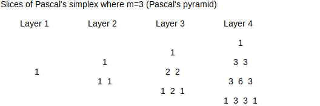
⚠️NOTE️️️⚠️
If you stack the slices/layers shown above, you'd get the first 4 layers of the 3-simplex (3-simples as in 3 dimensions, Pascal's pyramid). A pyramid has 4 sides: 1 bottom and 3 others that combine to form the top. Each of the 3 top-forming sides isolated is Pascal's triangle.
For example, just stacking the right edge of the layers above will give you Pascal's triangle. The Wikipedia page has a more helpful 3D diagram.
For binomial coefficients, standard combination notation can be used instead of the notation used here. For the binomial example above, is equivalent to . [FCP:p9-10] [WIKI:Multinomial Coefficient]
⚠️NOTE️️️⚠️
The book shows the multinomial theorem as .
There may be restrictions as to which objects can or cannot appear in the same combination (subset). For example given the set {a, b, c, d, e}, out of all possible subsets of size 4, the following have both b and d present:
To calculate the number of combinations with such a restriction, remove the objects that must be present from the original set and calculate the number of combinations as if those objects didn't exist. The idea is that, during the selection process, those objects are implicitly already in the subset.
For the example above, since b and d must be present in each subset, the set reduces from {a, b, c, d, e} to {a, c, e}. For the ...
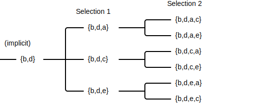
Using the reduced set with the standard formula, .
def count_combinations_with_include_restrictions(n: int, r: int, include_object_count: int) -> int:
return count_combinations(n - include_object_count, r - include_object_count)
count_combinations_with_include_restrictions(5, 4, 2)=3
The process of counting the number of combinations where each subset avoids certain elements uses the algorithm described above:
Given the same example above, to compute the number of subsets where b and d are both not present, . [FCP:p6]
def count_combinations_with_exclude_restrictions(n: int, r: int, exclude_object_count: int) -> int:
return count_combinations(n, r) - count_combinations_with_include_restrictions(n, r, exclude_object_count)
count_combinations_with_exclude_restrictions(5, 4, 2)=2
| Population Notation | Sample Notation | |
|---|---|---|
| Mean | ||
| Variance | ||
| Standard deviation | ||
| Size | N | n |
| Notation | |
|---|---|
| Sample space | S={A,B,C,...} |
| Probability | P(A) |
| Complement probability | P(A') |
| Union probability | P(A∪B) |
| Intersection probability | P(A∩B) |
| Conditional probability | P(A|B) |
descriptive statistics - The organization and summarization of data through numbers and visual graphs. [OSIS:1.1] [OSIS:2.1]
inferential statistics - Formal methods for drawing conclusions from good data, where probabilities are used as a measure of confidence for those conclusions. [OSIS:1.1]
statistic - A number that represents a property of a sample. For example, imagine that a sample of 1000 people have their heights measured. The average height across that sample is a statistic. [OSIS:1.1] [OSIS:2.5]
Each statistic is an estimate of a population parameter. [OSIS:1.1]
parameter - A number that represents the characteristic of the whole population, estimated using a statistic. For example, the average height across all people on Earth is a population parameter, while the average height across a sample of 1000 people is a statistic. The statistic is an estimation of the population parameter. [OSIS:1.1]
representative sample - A sample that captures the various characteristics of the population it comes from, meaning that it's a good representation of the population. A statistic on a representative sample should roughly align with the corresponding population parameter that it's for. [OSIS:1.1]
variable - A characteristic or measurement that can be determined for every member of a population. Variables come in two forms:
data - Values for a variable. For example, given a sample of 5 people from a population, the following data represents their weights (numerical variable): [180, 200, 144, 127, 194]. [OSIS:1.1]
datum - A single value in data. [OSIS:1.1]
⚠️NOTE️️️⚠️
The book uses the term data point but doesn't explicitly define it. Several other online sources are confirming that datum are data point are the same thing (single item in data)?
paired data - Two data sets where each data point one has a unique corresponding data point in the other. That is, the data sets are the same size and the observations between them can be paired together.
For example, consider two data sets that tracking the an individual's weight across a span of days. The first data set captures weights in the mornings while the second captures weights in the evening. These two data sts can be paired together. [OSIS:2.2]
quantitative data - Data that measures or counts the attributes of a population. Household income, number of family members, and distance to the nearest Burger King are all examples of quantitative data. [OSIS:1.2]
qualitative data - Data that falls into a category but typically can't be measured or expressed using numbers. Hair color, car model, and brand of shoes are all examples of qualitative data. [OSIS:1.2]
discrete quantitative data - Quantitative data that can only be counted (no fractions / ratios). For example, imagine measuring the number of emails you send throughout the day. The value would end up being a whole number. There's no such thing as a sending a fractional number of e-mails (e.g. half e-mail or a quarter e-mail). [OSIS:1.2]
continuous quantitative data - Quantitative data that can be fractional. For example, imagine measuring how many hours it took someone to drive to work. The value may end up being a fractional number (e.g. 2.15 hours). [OSIS:1.2]
population - A set under study. [OSIS:1.1]
sample - A subset of a population, selected to represent the population in studies that produce information about the population. For example, instead of studying all people on Earth, a sample of 1000 people might be chosen as a representation of all people on Earth. [OSIS:1.1]
Sampling is used because it's a more practical alternative to studying an entire population, which often times isn't feasible (e.g. studying 1000 people is more feasible than studying every single person on Earth). [OSIS:1.1] However, the sample should retain the characteristics of the population that it's from, meaning that results of studies done on the sample translate to the population. In that sense, samples are typically random samples. [OSIS:1.2]
random sample - A sample where members of the population are randomly selected for the sample, intended to reduce / eliminate bias. [OSIS:1.2]
True random sampling is performed with replacement. [OSIS:1.2]
simple random sample - A form of sampling where where each member of a population had an equal chance of being selected for the sample. [OSIS:1.2]
stratified sample - A form of random sampling where the population is first placed into groups (strata), then a proportionate number of members from each group are randomly selected to be part of the sample. [OSIS:1.2]
cluster sample - A form of random sampling where the population is first placed into groups (clusters), then a set of the groups are randomly selected, where the members of those selected groups make up the sample. [OSIS:1.2]
systematic sample - A form of random sampling where the population is lined up, a random starting point in the line is selected, and every nth member after the start of the line is selected to be part of the sample. For example, imagine being given a list of stores in the city you live in. Picking a random starting point in that list and selecting every 5th store after that starting point is systematic sampling. [OSIS:1.2]
convenience sample - A form of sampling where, rather than randomly selecting members of the population somehow, members of the population are selected in some other non-random fashion. For example, selecting a sample of restaurant goers by choosing those who are already currently eating at the local Burger King restaurant. [OSIS:1.2]
sampling error - An error in analysis due to the sample not being representative of the population it represents. For example, the sample might have been too small or biased in some way. [OSIS:1.2]
In most cases, a sample will never be truly representative of it the population it was chosen from. There will always be some level of sampling error. [OSIS:1.2]
non-sampling error - An error in analysis unrelated to sampling error (all errors other than those caused by poorly choosing a sample). These are typically errors caused by faulty data collection. For example, incorrectly counting up the answers in a set of surveys is a non-sampling error. [OSIS:1.2]
sampling bias - When a sample isn't as representative of its population because some members of the population were more likely to be selected than others for the sample. In other words, the selection process was biased rather than fair. [OSIS:1.2]
variation - How spread out data is around the center of data. For example, the manufacturer that makes Snickers chocolate bar may intend for each bar to be 1.86 ounces, but realistically the weight of each Snickers will fluctuate one way or the other by some marginal amount. [OSIS:1.2]
measurement levels - There are four different classes in which data is measured, depending on the data's properties. [OSIS:1.3]
nominal scale - A form of measuring categorical data that is unordered. For example, smartphone models are categories and there is no inherit order to them, so they would be measured on a nominal scale. [OSIS:1.3]
ordinal scale - A form of measuring categorical data that is ordered / ranked (unlike nominal scale), but the degree of difference between the measured items isn't captured. For example, the top 5 smartphone models is ordinal scale data. A smartphone model that comes before another one is ranked higher, but the difference in how much better it is isn't captured by the ordinal scale. [OSIS:1.3]
interval scale - A form of measuring quantitative data that is ordered / ranked, where the distance between the measured items is captured (unlike ordinal scale). However, there is no base value / fixed beginning with interval scale data. For example, 2:15pm is one hour ahead of 1:15pm (distance is captured), but you can't say that 2:15pm is n times more than 1:15pm (not representable as a ratio) because there is no definitive starting point in which time starts. [OSIS:1.3]
ratio scale - A form of measuring quantitative data that is ordered / ranked, where the distance between the measured items is captured and there is a fixed beginning (unlike interval scale). When there is a fixed beginning, it's possible to compute ratios. For example, 30 feet below sea-level is twice as deep as 15 feet below sea-level. [OSIS:1.3]
| Nominal scale | Ordinal scale | Interval scale | Ratio scale | |
|---|---|---|---|---|
| Labelled (has names) | x | x | x | x |
| Ordered (has ranks) | x | x | x | |
| Distance | x | x | ||
| Fixed beginning | x |
⚠️NOTE️️️⚠️
For interval scale, can't you just make a arbitrary starting point? For example, treat midnight as the starting point. Then you would be able to take a ratio.
I suppose if you gave it a starting point, it wouldn't be interval scale anymore. It would be ratio scale.
frequency - The number of times some value occurs in data. For example, in the list [9, 8, 1, 1, 5, 7, 9, 7, 6], 7 has a frequency of two. [OSIS:1.3]
stats_code/Frequency.py (lines 11 to 17):
def frequency(data: list[T]) -> dict[T, int]:
ret = {}
for v in data:
v_freq = ret.get(v, 0) + 1
ret[v] = v_freq
return ret
frequency([1,5,4,4,5,5,6])={1: 1, 5: 3, 4: 2, 6: 1}
relative frequency - A ratio representing the number of times some value occurs in the data vs the total number of data points in that data. In other words, the relative frequency is the frequency as a ratio. For example, in the list [9, 8, 1, 1, 5, 7, 9, 7, 6], 7 has a relative frequency of . [OSIS:1.3]
stats_code/RelativeFrequency.py (lines 13 to 16):
def relative_frequency(data: list[T]) -> dict[T, int]:
freqs = frequency(data)
return {n: f / len(data) for n, f in freqs.items()}
relative_frequency([1,5,4,4,5,5,6])={1: 0.14285714285714285, 5: 0.42857142857142855, 4: 0.2857142857142857, 6: 0.14285714285714285}
cumulative frequency - The accumulation of frequencies down a list, where that list has a meaningful order and has been sorted by that order (ascending). This is useful when the data is interval scale / ratio scale because it gives an "up-until" view. For example, consider data that tracks the month in which a fridge was sold: [Jan, Jan, Feb, Feb, Mar, Mar, Mar, ...]. The cumulative frequency will let you know how many fridges were sold in total by each month. [OSIS:1.3]
| Month | Fridges Sold (Frequency) | Total Fridges Sold (Cumulative Frequency) |
|---|---|---|
| Jan | 3 | 3 |
| Feb | 2 | 3+2=5 |
| Mar | 2 | 3+2+2=7 |
| ... | ... | ... |
stats_code/CumulativeFrequency.py (lines 14 to 32):
def cumulative_frequency(data: list[T]) -> dict[T, int]:
freqs = frequency(data)
cum_freqs = {}
last_val = 0
for item in sorted(freqs):
last_val += freqs[item]
cum_freqs[item] = last_val
return cum_freqs
def cumulative_relative_frequency(data: list[T]) -> dict[T, int]:
freqs = relative_frequency(data)
cum_freqs = {}
last_val = 0
for item in sorted(freqs):
last_val += freqs[item]
cum_freqs[item] = last_val
return cum_freqs
cumulative_frequency([1,5,4,4,5,5,6])={1: 1, 4: 3, 5: 6, 6: 7}
cumulative_relative_frequency([1,5,4,4,5,5,6])={1: 0.14285714285714285, 4: 0.42857142857142855, 5: 0.8571428571428571, 6: 1.0}
⚠️NOTE️️️⚠️
For cumulative relative frequency, the ending frequency in the list should sum to 1.
Beware floating point rounding errors. It may not sum to exactly 1.
explanatory / response variable - Two variables that have a relationship with each other, where changes in the explanatory variable causes changes in the response variable. Researchers manipulate an explanatory variable and measure the resulting changes in the response variable. For example, imagine a clinical trial that's testing the effectiveness of a flu drug. The amount of the drug administered is the explanatory variable while the degree to which flu symptoms are expressed is the response variable. [OSIS:1.4]
⚠️NOTE️️️⚠️
See treatment experimental unit, and lurking variable.
treatment - One specific value within an explanatory variable. Treatments are applied to experimental units. For example, if the explanatory variable is the amount of some drug that gets administered, the treatments may be 50mg, 70mg, 200mg, etc.. [OSIS:1.4]
experimental unit - A single entity that can have a treatment applied to it. Once treatment is applied, the experimental unit is measured. For example, if treatment is the administrating of a drug, the experimental unit may be a person. That is, each treatment of the drug (explanatory variable) is given to a single person, where that person's symptoms are measured (response variable). [OSIS:1.4]
lurking variable - A variable that is neither an explanatory variable nor a response variable, but still could influence the relationship between the two variables. For example, imagine a clinical trial that's testing the effectiveness of a flu drug. Age can be a lurking variable in that older people typically have less active immune systems, and as such may not show as much improvement in symptoms unless given higher dosages (treatments). [OSIS:1.4]
Studies typically limit the influence of lurking variables by randomly assigning experimental units to treatment groups. The random assignment should make it so that lurking variables are equally spread out between those groups, and as such their impact won't be an outsized influence on the relationship between explanatory variable and response variable. [OSIS:1.4]
⚠️NOTE️️️⚠️
Does "random assignment" in this case just mean random sampling? Random assignment is what the book uses.
placebo - A fraudulent form of treatment intended to deceive the participant. Where as a real treatment may influence the response variable, a placebo is explicitly shouldn't influence the response variable.
Placebos are often supplied instead of real treatment to mitigate the power of suggestion. For example, in drug trials, it's not uncommon for a participant to experience a change in the response variable simply due to the fact that they're expecting a change in the response variable. Such cases can be factored in to experimentation by explicitly testing for it, by administering placebos to certain participants (control group). [OSIS:1.4]
Placebo's are often administered in experiments that are blinded, such that a participant won't know whether they're receiving a treatment or a placebo. [OSIS:1.4]
control group - A group within the experiment that unknowingly receives a placebo rather than treatment. [OSIS:1.4]
blind - A form of experimentation where participants don't know if they've been administered a treatment or a placebo. [OSIS:1.4]
double-blind - A blind experiment extended to include keeping information away from researchers as well as participants. That is, ...
histogram - A graph, similar to a bar chart, that's used for visualizing frequencies in ratio scale and interval scale data. The data is bucketed into intervals, then frequencies are applied on those intervals. Buckets are represented as bars placed along the x-axis in ascending order, where the height of the bar (y-axis) is the frequency for that bucket.
For example, imagine the following ratio scale data [5, 5, 1, 2, 6, 3, 5.5, 5.5, 6, 6]. Bucketing up the data into intervals 2 units wide results in ...
| Bucket | Data | Frequency (count) |
|---|---|---|
| (0, 2] | [1, 2] | 2 |
| (2, 4] | [3] | 1 |
| (4, 6] | [5, 5, 5.5, 5.5, 6, 6, 6] | 7 |
... which get represented as the histogram shown below.
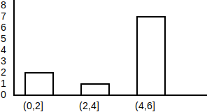
[OSIS:2.2]
⚠️NOTE️️️⚠️
Histograms aren't typically used for nominal scale or ordinal scale data because there is no meaningful ordering to that type of data. For those, you'd better off using a bar chart. Remember, with histogram, the x-axis is using the meaningful ordering of the data to figure out where to put each bucket (ascending order).
⚠️NOTE️️️⚠️
Another form of graph, called a frequency polygon, is essentially a histogram with lines rather than bars. That is, instead of bars, a point is inserted where the top-middle of each bar is and a line is used to connect each point to the point immediately on its right.
People sometimes use frequency polygons when comparing multiple data sets. It's easier to show overlapping lines than it is to show overlapping bars.
convenient starting point - An algorithm for determining a starting value of the first histogram bucket, which is less than the lowest value in the data. The algorithm scans for two numbers in the data:
The algorithm takes the number with most decimal places and calculates a new number t=5*1/(d+1), where d is the number of decimal places. Then, it subtracts t from the lowest number to determine where the first histogram bucket should start from. For example, given the smallest number 1.5 and the number with most decimal places 2.123, the first bucket of the histogram should start at 1.5-0.0005=1.4995. [OSIS:2.2]
⚠️NOTE️️️⚠️
I don't know why this algorithm exists. It's shifting the first bucket of the histogram back by some arbitrary nonsensical amount. Other sources online seem to be referencing the same algorithm.
I think what this section of the book was trying to convey is that, for histograms, sometimes you may want to have your first bucket start off at a lower point than the lowest value in your data. For example, if you're bucketing in intervals of 10, and the lowest value is 6, it may make sense to have your intervals be 1-10, 11-20, 21-30, etc.. as opposed to 6-15, 16-25, 26-35, etc..
percentile - Given data that has meaningful ordering (e.g. ratio scale data or interval scale data) and has been sorted in an ascending order, the data point at the nth percentile is the one that's n% up from the start of the data. For example, imagine 20 people lined up from shortest height to tallest height:
2 people at 5'1
8 people at 5'5
9 people at 5'9
1 person at 6'1
The 16th tallest person in the list is at the 80% mark (20*0.8=16) with a height of 5'9, meaning that height at the 80th percentile is 5'9.
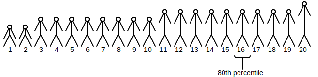
⚠️NOTE️️️⚠️
It's important to note that when someone says at nth percentile, they aren't talking about a range or group of data points. They're typically talking about the specific data point at that percentile (e.g. 16th person).
However, when they say in the nth percentile, they may be talking about the range of data points up the one at the nth percentile.
In certain cases, the computed index for a percentile may not land exactly on a data point (it isn't an integer). In such cases, the data point before and the data point after are averaged together. For example, in the same height scenario discussed above, the 72nd percentile is somewhere between the 14th and 15th person: 20*0.72=14.4. As such, the heights of the 14th person and 15th person are averaged together. [OSIS:2.3]
⚠️NOTE️️️⚠️
"... the data point before and the data point after are averaged together" doesn't sound like a hard and fast rule. It's just a crappy method of interpolation offered by the book because it's simple? It sounds like you can choose other types of interpolation.
The book does a bad job of explaining percentiles. I had to get help from many other resources (including asking online). Some of what I wrote / coded may not be entirely correct.
stats_code/Percentile.py (lines 9 to 49):
def percentile_boundary(data: list[T], percent: float) -> float:
data.sort()
percentile_idx = percent * (len(data) - 1)
return percentile_idx
def percentile_at(data: list[float], percent: float) -> float:
percentile_idx = percentile_boundary(data, percent)
if percentile_idx.is_integer():
return data[int(percentile_idx)]
elif len(data) > 1: # Avg values in indexes to left and right (feels wishy-washy). More accurate ways available?
prev_idx = int(percentile_idx)
next_idx = prev_idx + 1
return (data[prev_idx] + data[next_idx]) / 2
else:
return data[0]
def percentile_in(data: list[float], percent: float, test_val: float) -> bool:
val = percentile_at(data, percent)
return test_val <= val
def percentile_for(data: list[float], value: float) -> float:
# Sort the data, then find out ...
# * how many elements come before value (before_cnt)
# * how many elements are value (cnt)
# then calculate as (before_cnt + 0.5*cnt) / len. This came from the book and feels very wishy-washy. More accurate
# ways available?
data.sort()
before_idx = bisect_left(data, value)
if data[before_idx] == value:
before_idx -= 1
before_cnt = before_idx + 1
cnt = 0
at_idx = bisect_left(data, value)
while at_idx < len(data) and data[at_idx] == value:
cnt += 1
at_idx += 1
return (before_cnt + 0.5 * cnt) / len(data)
percentile_boundary([1,5,4,4,5,5,6], 0.7)=4.199999999999999
percentile_at([1,5,4,4,5,5,6], 0.7)=5.0
percentile_in([1,5,4,4,5,5,6], 0.7, 6)=False
percentile_for([1,5,4,4,5,5,6], 4.5)=0.5714285714285714
quartile - Quartiles are percentiles but at a reduced granularity of quarters:
stats_code/Quartile.py (lines 10 to 14):
def quartiles_at(data: list[T]) -> tuple[float, float, float]:
return percentile_at(data, 0.25), \
percentile_at(data, 0.5), \
percentile_at(data, 0.75)
quartiles_at([1,5,4,4,5,5,6])=(4.0, 5, 5.0)
⚠️NOTE️️️⚠️
4 quarters make a whole, so there's technically a quartile 4 (Q4) that's the same as the 100th percentile. However, people don't usually make a reference to this because it serves no purpose?
median - Given that has meaningful order (e.g. ratio scale data or interval scale data) and has been sorted in an ascending order, the median is the middle value in the list of data. In other words, the 2nd quartile or 50th percentile. [OSIS:2.3]
stats_code/Median.py (lines 10 to 12):
def median(data: list[float]) -> float:
return percentile_at(data, 0.5)
median([3,4,5])=4
median([3,4,5,6])=4.5
⚠️NOTE️️️⚠️
This is using the definition of percentiles as provided in the book. That is, if the number of elements in the data is even, then the median is the average of the two middle values (two middle values divided by 2).
It looks like the definition of median explicitly expects this averaging if there isn't exactly one middle value. Other types of interpolation allowed?
outlier - A data point that is significantly different from other data points in the same data. An outlier could be the result of an error somewhere or it could be a true data point of great importance. [OSIS:2.3]
interquartile range - The distance between the data point at the 3rd quartile and the data point at the 1st quartile: IPR = Q3 - Q1. An IPR can be used as a heuristic to detect outliers. Specifically, if a data point is ±1.5*IPR, it may be an outlier. [OSIS:2.3]
stats_code/Quartile.py (lines 18 to 21):
def iqr(data: list[float]) -> float:
q1, _, q3 = quartiles_at(data)
return q3 - q1
iqr([1,5,4,4,5,5,6])=1.0
box plot - A graph that's used for visualizing quartiles, using a number line and a box. On the graph, a ...
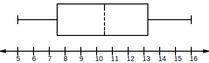
[OSIS:2.4]
mean - A measure of center in data that has a meaningful order (e.g. ratio scale data or interval scale data). Data points are summed together, then the result is divided by the count of numbers in that list. For example, the average for the collection of temperature readings of [1C, 2C, 3C] is 2: 1+2+3 / 3 = 2. [OSIS:2.5]
stats_code/Mean.py (lines 10 to 12):
def mean(data: list[float]) -> float:
return sum(data) / len(data)
mean([1,2,3])=2.0
The symbol used to represent the mean for a...
mode - The most frequent value in data. [OSIS:2.5]
stats_code/Mode.py (lines 11 to 15):
def mode(data: list[T]) -> tuple[T, int]:
freqs = frequency(data)
item, count = max(freqs.items(), key=lambda v: v[1])
return item, count
mode([1,2,3,1,1,2,9,3])=(1, 3)
relative frequency distribution - All relative frequencies for a set of data. For example, if the data I have is a list of 10 coin flip outcomes, where 4 flips came out as heads vs 6 flips as tails, the relative frequency distribution would be as follows.
| Outcome | Relative Frequency |
|---|---|
| heads | 4/10 = 0.4 |
| tails | 6/10 = 0.6 |
A relative frequency distribution must sum to 1. [OSIS:2.5]
sampling distribution - The relative frequency distribution for a sample of size n, where n is large. [OSIS:2.5]
⚠️NOTE️️️⚠️
The definition in the book seems inconsistent with other sources. Also, "large" is not concretely defined.
symmetrical distribution - A distribution that, when plotted, is mirrored across its center.
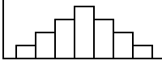
[OSIS:2.6]
perfectly symmetrical distribution - A symmetrical distribution where the mean and median are the same. If the distribution is unimodal, the mode will also be the same. [OSIS:2.6]
skewed distribution - A distribution that, when plotted, looks as if it's a symmetrical distribution that's been "pulled" towards either the right or left. In other words, it's as if someone has grabbed the peak (mode) of a symmetrical distribution and stretched the plot either left or right.
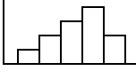
⚠️NOTE️️️⚠️
Other sources are calling this a skewed normal distribution / asymmetrical distribution.
[OSIS:2.6]
multimodal - Data that has ...
For example, [1, 2, 2, 3, 3, 4] is bimodal because 2 and 3 are both the most frequent.
When data is represented as a relative frequency distribution, each mode will be a top-most peak. In other words, the number of peaks corresponds to the number of modes. For example, the relative frequency distribution below is bimodal.
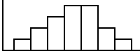
[OSIS:2.6]
deviation - The difference between a data point and the mean of the data it's from. For example, given the data [5, 3, 1, 5, 6] which has a mean of 4, the deviation for 5 is 5 - 4 = 1. [OSIS:2.7]
stats_code/Deviation.py (lines 6 to 8):
def deviation(data: list[float], idx: int) -> float:
return data[idx] - mean(data)
deviation([5,3,1,5,6], 0)=1
⚠️NOTE️️️⚠️
Other sources are saying that deviation could be the difference from some other central tendency value other than mean (e.g. median), but most of the time it's the mean.
⚠️NOTE️️️⚠️
The book mentions that if you have a data set, and you add together the deviations for each data point, the sum should be 0. For example, the data set [1, 5, 6] has a mean of 4: (4-1) + (4-5) + (4-6) = 0.
The point it's making is that you can't add up deviations to get the spread of data. That's why variance squares the deviations. The square of a negative number is positive.
variance - A statistic that squares the deviation of each data point, then averages them.
The variance for a ...
[OSIS:2.7]
stats_code/Variance.py (lines 8 to 15):
def population_variance(data: list[float]) -> float:
sq_devs = [deviation(data, i)**2 for i in range(len(data))]
return mean(sq_devs)
def sample_variance(data: list[float]) -> float:
sq_devs = [deviation(data, i)**2 for i in range(len(data))]
return sum(sq_devs) / (len(data) - 1)
population_variance([2,4,6,8,10])=8
sample_variance([2,6,8])=9.333333333333332
⚠️NOTE️️️⚠️
For sample variance, why use (n-1) instead of n? The sample variance is trying to estimate the population variance, and dividing by (n-1) gives you a number that's closer to the population variance. In the example above, if the sample variance was dividing by n instead of n-1, it would end up being 6.222, which is farther away from the population variance.
As the sample size approaches the population size, the significance of variance dividing by (n-1) vs n becomes less and less.
The official name for this is Bessel's correction.
standard deviation - A statistic that measures how far data points are from the mean, computed as the square root of the variance.
The standard deviation for a ...
[OSIS:2.7]
stats_code/StandardDeviation.py (lines 8 to 13):
def population_standard_deviation(data: list[float]) -> float:
return math.sqrt(population_variance(data))
def sample_standard_deviation(data: list[float]) -> float:
return math.sqrt(population_variance(data))
population_standard_deviation([2,4,6,8,10])=2.8284271247461903
sample_standard_deviation([2,6,8])=2.494438257849294
sampling variability - The amount of variability in a set of statistics. In other words, sampling variability is the amount that some statistical function varies when that measure is applied to a set of different samples. For example, given the averages for each sample in a set of samples, you can determine the variability of those averages via standard error. [OSIS:2.7]
⚠️NOTE️️️⚠️
The book says that standard error is commonly used for sampling variability. However, an online source says that variance and standard deviation are commonly used for sampling variability and doesn't mention standard error at all.
⚠️NOTE️️️⚠️
It sounds like the samples don't have to be from the same population. If they are for the same population, the sampling variability will likely end up being lower than if they're from different populations.
standard error - A measure of variability, computed as when the standard error focuses on the mean. [OSIS:2.7]
⚠️NOTE️️️⚠️
In this case, is the standard deviation of the population and n is the sample size. Note that this is comparing properties of the population (population standard deviation) vs properties of the sample (sample size).
⚠️NOTE️️️⚠️
Covered more in depth in ch7.
variability - A measure of how spread out a set of data points are. For example, standard deviation is one way to measure variability. [OSIS:2.7]
probability - A measure that captures how certain it is for an outcome is to occur. The probability of an outcome is the long-term relative frequency of that outcome. For example, as you flip a fair coin 10 times to 100 times to 1,000 times to 10,000 times, the relative frequency of getting a heads approaches 0.5. The more time you flip, the closer the relative frequency will be to 0.5.
⚠️NOTE️️️⚠️
The bounds here are the same as relative frequency. The probability / relative frequency is between 0.0 (never happens) and 1.0 (always happens).
The notation for probability is P(A), where A represents an event (any combination of outcomes). For example, P(A)=0.5 means that event A happens half the time. [OSIS:3.1]
outcome - One possible result of an experiment. For example, if your experiment is to flip a coin, the outcome may end up being heads or tails. [OSIS:3.1]
⚠️NOTE️️️⚠️
Wikipedia says "in an experiment or trial". The book doesn't mention what a trial is, but online sources are saying that it's one instance of an experiment (e.g. each repetition of an experiment is a trial).
sample space - All possible outcomes for an experiment. Sample space is typically denoted as S={outcome1, outcome2, ...}. For example, if your experiment is to flip a fair coin twice, the sample space is S={HH, HT, TH, TT}, where H and T denote heads and tails respectively. [OSIS:3.1]
event - Any combination of outcomes for an experiment. In other words, a subset of the sample space for that experiment. For example, if your experiment is to roll a 6-sided dice (sample space being S={1, 2, 3, 4, 5, 6}), the outcome being an odd number is the event {1, 3, 5}. [OSIS:3.1]
experiment - A procedure carried out under controlled conditions. [OSIS:3.1]
chance experiment - An experiment where the outcome is unknown. For example, an experiment that involves flipping a fair coin is a chance experiment because the outcome can be either heads or tails. [OSIS:3.1]
⚠️NOTE️️️⚠️
The book does a poor job of explaining this. It looks like it calls it a "chance experiment" and then switches to calling it a "probability experiment" a few paragraphs down.
Here's what GPT says: Chance experiments have an element of randomness involved in the outcome. In a general experiment, the focus is on controlling conditions and variables to study relationships or test hypotheses. However, in a chance experiment, the emphasis is on the random nature of the outcomes and the probability distribution that governs them.
law of large numbers - As the number of repetitions for a chance experiment increases, the relative frequency produced by those repetitions approaches the theoretical probability. For example, as you flip a fair coin 10 times to 100 times to 1,000 times to 10,000 times, the relative frequency of getting a heads approaches 0.5. The more time you flip, the closer the relative frequency will be to 0.5. 0.5 is the theoretical probability of getting heads on a coin flip, which represents getting a heads half the time. [OSIS:3.1]
empirical - Being derived through observation rather than theory or logic. For example, a new drug is typically tested empirically, by applying treatments and observing the effects. [OSIS:3.1]
fair / biased - A coin, dice, or similar object whose outcomes have equal probability is said to be fair. For example, flipping a fair coin has 0.5 probability for both heads and tails. When that object's actual outcome probabilities differ from their expected fair outcome probabilities, the object is said to be unfair or biased. For example, a biased coin may have a 0.4 probability for heads vs a 0.6 probability for tails. [OSIS:3.1]
disjunction - Logical OR operator, also called union or disjunct. For example, in the context of probabilities, the probability that event A={a,b,c} or B={a,b,d} happen is the probability of the union between their outcomes: P(A∪B)=P({a,b,c,d}). Likewise, the disjunction of the outcomes a and b is {a,b}. [OSIS:3.1]
The disjunct probability of two events is sometimes calculated using the addition rule. [OSIS:3.3]
conjunction - Logical AND operator, also called intersection or conjunct. For example, in the context of probabilities, the probability that event A={a,c,d} and B={a,b,d} happen is the probability of the intersection between their outcomes: P(A∩B)=P({a,d}). [OSIS:3.1]
The conjunct probability of two events is sometimes calculated using the multiplication rule. [OSIS:3.3]
complement - Logical NOT operator. For example, in the context of probabilities, the complement of an event A={c,d} when the sample space is S={a,b,c,d,e} is any outcome in S that isn't in A: P(A')={a,b,e}. Likewise, if P(A)=0.6, then P(A')=1-P(A)=0.4. [OSIS:3.1]
⚠️NOTE️️️⚠️
The notation for the complement of something is to include an apostrophe at the end of the symbol. For example, the complement of A is A', pronounced "A prime".
conditional probability - The probability that event A occurs given that event B already occurred, written as P(A|B). In other words, P(A|B) is the probability of event A given the extra condition that you know event B is true. That extra condition effectively narrows down the set of possible outcomes that event A represents. For example, consider a standard deck of 52 playing cards. Given that ...
..., drawing a king (event A) out of the full deck is P(A)=4/52. If you know for a fact that the card you draw will be a face card (event B), then the sample space reduces from 52 cards to just the 12 face cards. Drawing a king out of those 12 cards is P(A|B) = 4/12.
⚠️NOTE️️️⚠️
The way conditionally probability is normally describes is "The probability that event A occurs given that event B already occurred". This is confusing because the word occur is used. It makes it sound as if this is a sequence of events when that's not what's happening. What's happening is that additional information is being made available that reduces the sample space.
If you already know P(B) and the joint probability P(A∩B), the conditional probability P(A|B) can be calculated as P(A|B) = P(A∩B)/P(B). For the example above, ...
... , resulting in the calculation P(A|B) = (12/52) / (4/52) = 4/12. [OSIS:3.1]
dependent event - Given two events A and B, ...
In other words, if event A occurring changes the sample space for event B, events A and B are said to be dependent events. Otherwise, they're said to be independent events.
For example, two flips of a fair coin represent two independent events because the first flip doesn't effect the probability of the next flip: Each flip has a 0.5 probability of landing heads vs tails. In contrast, picking two cards out of a shuffled 52-card deck (without replacement) represents dependent events because the first pick reduces the sample space of the second pick by one less card (51 cards).
To show that two events A and B are independent, you can use any of the following relations.
⚠️NOTE️️️⚠️
At the beginning of ch3.2, the book goes prominently displays that mutually exclusive events aren't the same thing as independent events.
⚠️NOTE️️️⚠️
The book says that if you don't know whether A and B are independent or dependent, assume they are dependent until you can show otherwise (via the rules above).
mutually exclusive event - Two events A and B that don't share any outcomes. For example, imagine rolling a fair dice. Given that event A={1,3,5} (outcome is odd) and event B={2,4,6} (outcome is even), A and B are mutually exclusive because they don't share any outcomes between them.
The joint probability of mutually exclusive events is always 0: P(A∩B)=0. [OSIS:3.2]
⚠️NOTE️️️⚠️
At the beginning of ch3.2, the book goes prominently displays that mutually exclusive events aren't the same thing as independent events.
⚠️NOTE️️️⚠️
The book says that if you don't know whether A and B are mutually exclusive, assume they aren't until you can show otherwise.
with replacement - A form of random sampling where a member of the population can get placed in the sample more than once. That is, once a member is selected for a sample, that member is re-inserted back into the population and may get selected again. [OSIS:1.2]
This concept extends to probability theory. For example, sampling 5 cards out of a 52-card deck without replacement means that each card in the sample is guaranteed to be unique (no duplicates). When sampling is performed ...
⚠️NOTE️️️⚠️
This part originally came from ch1.2 of the book. I moved it out to a note because I can't verify it:
While true random sampling is performed with replacement, it's sometimes more practical to sample without replacement. For example, having members of a population fill out a survey is an example of sampling without replacement (once a member fills out a survey, that member won't be selected to fill out the survey again). For large populations where a small number of members are being sampled, it typically won't matter if the sample is with replacement or without replacement. It becomes an issue when the population size is small. [OSIS:1.2]
multiplication rule - A rule for calculating joint probability. There are two variations of the rule, one for dependent events and one for independent events. Given two events A and B that are ...
For example, consider a jar of 5 green marbles and 5 blue marbles. When selecting marbles with replacement, each selection becomes an independent event. Selecting two green marbles in a row with replacement is P(G∩G) = P(G)*P(G) = 0.5*0.5 = 0.25.
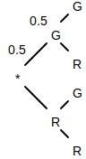
Contrast that to selecting marbles without replacement, where each selection after the first becomes an independent event. Selecting two green marbles in a row without replacement is P(G∩G) = P(G)*P(G|G) = 0.5*4/9 = 0.222.
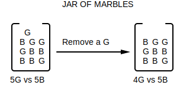
[OSIS:3.3]
⚠️NOTE️️️⚠️
For dependent events, the conditional probability must be a known value. You can't expand out the conditional probability in the equation because the formula will then infinitely recurse.
⚠️NOTE️️️⚠️
For dependent events, note that the inputs into the conditional probability can be swapped: P(A∩B) = P(A)*P(B|A) = P(B)*P(A|B). For example, consider a jar with 2 As and 4 Bs. The probability of first selecting an A and then a B can be visualized as follows.
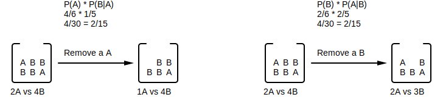
Both formulas produce the same result but it feels like the second formula makes it more intuitive to understand. The first operand is the probability of selecting one of the 4 A: P(A). Once that A's been selected and removed from the jar (without replacement), the second operand is the conditional probability of selecting a B.
addition rule - A rule for calculating disjunct probability: P(A∪B) = P(A)+P(B)-P(A∩B). For mutually exclusive events, P(A∩B)=0, meaning you will often see this rule written as P(A∪B) = P(A)+P(B) if A and B are mutually exclusive.
For example, consider selecting two marbles (with replacement) out of a jar of 5 green, 2 blue, and 3 red marbles.
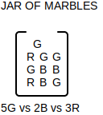
Given that ...
..., P(X∪Y) = P(X)+P(Y)-P(X∩Y) = 0.7+0.5-0.2 = 1.0. [OSIS:3.3]
⚠️NOTE️️️⚠️
This is how I'm thinking about what this formula is doing: When you perform P(X)+P(Y) you're stacking the probabilities together such that it becomes the probability of either G outcome, R outcome, twice the B outcomes. It's 2*B because B appears in both X and Y.
The reason you're subtracting by the joint probability is because the joint probability includes the set of outcomes that are in both events (X∩Y={B}). Meaning, when you subtract by P(X∩Y), you're removing 1 of the B's from stacked probability probability.
It might be easier to think of this as outcomes: [B,G]+[B,R]-[B] = [B,B,G,R]-[B] = [B,G,R]
occur - Given an experiment (or trial), an event is said to occur if it contains the outcome of that experiment. In other words, if the outcome of the experiment is one of the outcomes in the event. [WIKI:Event]
⚠️NOTE️️️⚠️
I had a lot of problems understanding "occur" with regards to conditional probability.
Here's how I'm understanding it:
Events A and B occurring does not mean that there were two back-to-back experiments / trails / draws, where event A comes out first and event B comes out second. There seems to be specific notation for the probability of two back-to-back draws: P(A→B).
contingency table - A table that maps categorical variables to frequencies of categorical data. For example, imagine a scenario where a random sample of 100 people were surveyed, by gender, to determine their favorite movie genre. The ...
| Action | Comedy | Horror | Drama | |
|---|---|---|---|---|
| Male | 60 | 25 | 15 | 10 |
| Female | 20 | 30 | 30 | 20 |
| Other | 25 | 25 | 25 | 25 |
[OSIS:3.4] [WIKI:Contingency Table]
tree diagram - A diagram that enumerates outcomes and/or probabilities across a a number of trials. For example, the following tree diagram visualizes flipping a fair coin twice.
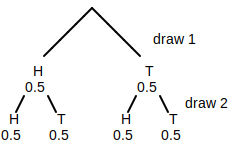
When the experiment has multiple instances of the same type of outcome, their branches are sometimes merged. For example, the following tree diagram visualizes drawing two marbles from from a jar with 2 blue marbles and 1 red marble (without replacement).
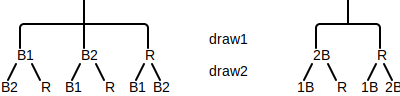
⚠️NOTE️️️⚠️
On the right-hand side diagram, the "2B" branch is basically intended to mean "this branch is replicated 2 times". I'm not exactly sure if listing out probabilities is possible / makes sense when you merge branches like this.
[OSIS:3.4]
random variable - Given a sample space, a random variable is a function that maps outcomes in a sample space to measurements. [WIKI:Random Variable] For example, a function that maps the outcome of 3 fair coin flips to the number of heads is a random variable.
There are two types of random variables:
[OSIS:4.1] [WIKI:Random Variable]
⚠️NOTE️️️⚠️
Discrete random variable must be a whole number or an integer number? For example, is it possible for a discrete random variable output -1?
I keep seeing finite/countably infinite vs. uncountable/continuous thrown around to describe the difference between discrete random variable vs continuous random variable.
⚠️NOTE️️️⚠️
The Wikipedia article says that the term random variable is misleading because it's neither random nor a variable.
permutation - One possible ordering of a set of n objects. For example, given the set {a, b, c}, the following permutations are possible.
For n objects, the number of permutations is n!. The above example has 3 objects, meaning the number of permutations is 3! = 3*2*1 = 6. [FCP:p3]
⚠️NOTE️️️⚠️
The book mentions that it's convenient to think of 0! as 1. Not sure why.
grouped permutation - Given n objects that have been broken up into k groups, a grouped permutation is on possible ordering of those grouped objects. In this case, "order" includes both the order of the groups themselves as well as order of the objects in the group. For example, imagine you're organizing a set of books on a book shelf, where each book is on a specific topic:
The goal is to determine how many arrangements are possible under the condition that books on the same topic are grouped together. Because each arrangement requires that books of same topic group together, you first need to determine the number of permutations per topic:
Then, you need to determine the number of arrangements for the topic groups. If the topic groups are arranged as the shown in the list above (math, chem, history, and language), there are 4!*3!*2!*1! ways the books themselves can be arranged.
Likewise, if the topic groups were arranged in some other order (e.g. chem, math, history, and math), there are still 3!*4!*2!*1! ways the books themselves can be arranged, which is equivalent to 4!*3!*2!*1!.
Regardless of how you arrange topic groups, each arrangement has 4!*3!*2!*1! ways in which the books themselves can arrange. Since there are 4! different ways to arrange topic groups, there are 4!*(4!*3!*2!*1!) there are ways the books can be arranged.
The number of grouped permutations is calculated as k!*(n1!*n2!*...*nk!), where k is the number of groups and n1...nk are the number of objects in each group. [FCP:p4]
permutation with repetition - One possible ordering of a set of n objects, where orderings don't distinguish between alike objects. For example, consider the different ways in which you can re-arrange the letters of APPLE. If you treat each letter as a distinct object, there are 5 objects and as such there are 5!=120 different permutations:
However, if you treat multiple instances of the same letter as alike objects, the number of permutations reduces. For example, [A1, P1, P2, L1, E1] and [A1, P2, P1, L1, E1] would qualify as the same permutation because, if all Ps are alike to each other, there is no difference between those two the permutations.
To determine the reduced number of permutations (permutations with repetition), first determine the number of permutations for just the Ps themselves: 2!=2. For each of the original 5!=120 permutations, there will always be a mirror permutation where P1 and P2 are swapped (e.g. [A1, P1, P2, L1, E1] and [A1, P2, P1, L1, E1]). In other words, there will always be 2 permutations that represent the same thing. As such, the reduced number of permutations is 5!/2!=60.
When there are multiple classes of alike objects, the concept works similarly. The divisor becomes the multiplication of number of permutation for each class. For example, imagine the word PEPPER instead of APPLE: [P1, E1, P2, P3, E2, R1]. First, determine the number of permutations for each letter:
The reduced number of permutations is 6!/(3!*2!*1!).
The number of permutations with repetitions is calculated as n!/(n1!*n2!*...*nk!), where n1...nk is the count of each distinct object (e.g. the number of Ps in APPLE). [FCP:p4-5]
combination - One possible subset of size r from a set of n objects. For example, given the set {a, b, c, d, e}, the following subsets of size 3 are possible.
To calculate the number of combinations possible, Often times, the formula is rewritten as the equivalent fraction . [FCP:p5]
⚠️NOTE️️️⚠️
The book mentions that it's convenient to define 0! as 1.
The reason for is that, in a set of size n, there is exactly 1 subset of size n. Likewise, the reason for is that, in a set of size n, there is exactly 1 subset of size 0.
The book also mentions that when r is out of bounds (r < 0 or r > n). It doesn't say why.
Pascal's identity - A property of combinations that states , where . For example, . [FCP:p7]
Pascal's triangle - A triangle of stacked numbers where ...
1
1 1
1 2 1
1 3 3 1
1 4 6 4 1
Each of these numbers is the result of , where the ...
C(0,0)
C(1,0) C(1,1)
C(2,0) C(2,1) C(2,2)
C(3,0) C(3,1) C(3,2) C(3,3)
C(4,0) C(4,1) C(4,2) C(4,3) C(4,4)
Other than the number at the very top and the numbers along the left and right edges (all 1s), each number in Pascal's triangle is a sum of the two numbers immediately above it. For example, in the triangle above, the 2nd number of the last row is , which is a sum of the two numbers immediately above it: .
Pascal's triangle is effectively an enumeration / visualization of Pascal's identity: . In the example, n=4 and r=1, meaning . [WIKI:Pascal's Triangle].
binomial coefficient - A term's coefficient in a binomial that's been raised to some power, once that raised binomial has been expanded. For example, the raised binomial expands out to , which has the binomial coefficients [1, 4, 6, 4, 1].
A binomial raised to n (non-negative integer), once expanded, has binomial coefficients that map to row n+1 of Pascal's triangle. In the example above, maps to the 5th row of Pascal's triangle: [1, 4, 6, 4, 1].
Pascal's triangle Pascal's triangle in combination notation
1 C(0,0)
1 1 C(1,0) C(1,1)
1 2 1 C(2,0) C(2,1) C(2,2)
1 3 3 1 C(3,0) C(3,1) C(3,2) C(3,3)
1 4 6 4 1 C(4,0) C(4,1) C(4,2) C(4,3) C(4,4)
[FCP:p7-9] [WIKI:Binomial Coefficient]
multinomial coefficient - A term's coefficient in a multinomial that's been raised to some power, once that raised multinomial has been expanded. For example, the raised binomial expands out to , which has the multinomial coefficients [1, 4, 6, 4, 1].
Where as a binomial coefficient only applies to two terms, a multinomial coefficient applies to a multinomial with any number of terms. For example, ...
Each multinomial coefficient can be calculated as , where . The variable n is the exponent of the multinomial while the variables g1...gr map to the exponents within a term in the expanded expression. For examples, above the expanded form of ...
can be written as .
can be written as .
⚠️NOTE️️️⚠️
Note the mapping between the coefficient's notation and value. For example, the first term in the example above ix , which is essentially . The exponents of x, y, and z map to the group sizes in the notation: .
⚠️NOTE️️️⚠️
Binomial coefficients are a special case of multinomial coefficients. For example, expands out to , which is equivalent to .
A multinomial coefficient represents the number of ways that a set of n objects can be divided into r subsets. The subsets can have different sizes, but in total they must cover all objects in the original set: . For example, consider counting how many different ways there are of organizing 10 books across 3 bookshelves, where the 1st shelf has 2 books, 2nd shelf has 3 books, and 3rd shelf has 5 books.
Using the multinomial coefficient formula shown above, . [FCP:p9-10] [WIKI:Multinomial Coefficient]
partition - Given a set, a partition is a collection of its subsets where each element of that set is in exactly one of those subsets (disjoint subsets). For example, given the set S={a,b,c}, one possible partition is {a,c} and {b}.
These subsets that make up a partition are often referred to as the parts of that partition. [IC:p27-28]
disjoint sets - A collection of sets that don't share any objects between them. [https://en.wikipedia.org/w/index.php?title=Disjoint_sets&oldid=1149225885]
addition principle - A formula for determining the size of a set from its partition: |S| = |S1| + |S2| + ... + |Sm|.
Given the partition {S1, S2, ..., Sm} representing set S, the size of S can be determined by adding together the size of the subsets that make up its partition. For example, given the partition {{a,c}, {b}, {d}}, the addition principle can be used to determine the size of the set that partition is for: 2+1+1=4.
The addition principle counts the number of ways one object can be selected from n different sets, where those sets are disjoint sets. For a more practical example, consider a person shopping for a hat. Of all the hats at the store, they're only interested in baseball hats and fedora hats. If the number of ...
... then the number of hats the person has to choose from is 15+7=22. [IC:p28]
⚠️NOTE️️️⚠️
Given a partition of set S, by definition those subsets shouldn't have any overlapping objects. But if they do, the inclusion-exclusion principle can be used to count the number of objects in S.
multiplication principle - A formula for determining the number of n-tuples that can be formed from the explosion of n sets (cartesian product): |N1| * |N2| * |N3| = |N1 x N2 x N3|. For example, given the cartesian product of two sets {0, 1, 2} and {x, y, z}, the multiplication principle can be used to determine the size of the cartesian product of those two sets: 3*3=9.
| 0 | 1 | 2 | |
|---|---|---|---|
| x | (x,0) | (x,1) | (x,2) |
| y | (y,0) | (y,1) | (y,2) |
| z | (z,0) | (z,1) | (z,2) |
The multiplication principle counts the number of ways n selections can be made from n sets, provided that a selection from one set doesn't alter in anyway the selection from the next set. For a more practical example, consider a person shopping for a shirt and a hat. At the store, ...
..., then the total possible pairings of 1 hat and 1 shirt that the person can purchase is 10*3=30. [IC:p28-p29]
⚠️NOTE️️️⚠️
For the addition principle, the sets being input have to be disjoint sets. For the multiplication principle, the sets don't have to be disjoint sets. For example, multiplication principle applied to set {0,1,2} and {0,1,2} is 9.
| 0 | 1 | 2 | |
|---|---|---|---|
| 0 | (0,0) | (0,1) | (0,2) |
| 1 | (1,0) | (1,1) | (1,2) |
| 2 | (2,0) | (2,1) | (2,2) |
A cartesian product n sets results in a set of n-tuples where the object at position i of a tuple is guaranteed to be from set i. In the example sets above, the tuples resulting HxS={(H1, S1), (H1, S2), (H1, S3), (H2, S1), ..., (H10, S3)} have hats at position 1 and shirts at position 2 of each tuple. In contrast to computing the cartesian product, the multiplication principle doesn't require that the objects within position i come from the same set. Instead, position i can come from different sets so long as those sets are all of the same size. For example, consider a person selecting two shirts to buy at a store that has 4 shirts available for purchase: {S1, S2, S3, S4}. The person can't choose to buy the same shirt twice. That is, if a shirt is purchased, 3 other shirts are available for the next purchase (e.g. if you choose to buy S2 first, you only have S1, S3, and S4 remaining to buy).
| S1 | (S1,S2) | (S1,S3) | (S1,S4) |
| S2 | (S2,S1) | (S2,S3) | (S2,S4) |
| S3 | (S3,S1) | (S3,S2) | (S3,S4) |
| S4 | (S4,S1) | (S4,S2) | (S4,S3) |
Even though the second position of the tuples aren't from the same set, each set that makes up the second position is the same size (3 shirts). As such, the multiplication principle still applies. A person selecting two shirts to buy at a store that has 4 shirts available for purchase has 4*3=12 possible pairs of shirts. [IC:p30]
subtraction principle - A formula for determining the size of subset A, given that you have both the ...
, ...: |A| = |U| - |A'|. For example, given that U={a,b,c,d,e} and A'={c,d,a}, the subtraction principle can be used to determine the size of the A: A=5-3=2.
The subtraction principle is commonly used to count when it's easier to count excluded objects (A') rather than the objects you're interested in (A). For example, consider 90 people lined up by shoe size from smallest to largest, starting at 5.5 to 12. If you're only interested in people that have a shoe size of at least 7, it might be easier to count people that with shoe sizes smaller than 7 and subtract from 90.
In relation to the subtraction principle formula |A| = |U| - |A'|, ...
[IC:p31-32]
⚠️NOTE️️️⚠️
The example above involves the physical act of counting, but the subtraction principle applies even in the case of algorithmic counting. For example, if you know the size of the universal set (set U) and it's easy to determine the number of excluded objects (set A') via the multiplication principle, then you can use the multiplication principle to determine the number of objects that you're interested in (set A).
division principle - A formula for determining the number of subsets in a partition, given that ...
, ...: k = |S| / v. For example, given the partition {{a,f} {b,e}, {c,d}}, the division principle can be used to determine the number of subsets in the partition: 6/2=3.
The division principle derives the count of a smaller set through the count of a larger set, provided that each object in the smaller set fans out to v distinct objects in the larger set. For example, an apartment complex has a maximum capacity of 250 people, and each apartment has a maximum of 5 people, meaning there are 250/5=50 apartments in the complex. In this example, ...
[IC:p31]
multiset - An unordered collection whose members are not distinct. In other words, unlike a set, a multiset can contain multiple the same object multiple times. Multisets are denoted by condensing n repeating objects as a multiplication. For example, {2*a, 1*b, 1*c} represents the same multiset as the previous example.
It's possible for a multiset to include an object an infinite number of times. For example, {∞*a, 3*b}.
For each distinct object in a multiset, the number of times it repeats is called its repetition number. In the example above, a repeats an infinite number of times and b repeats times. [IC:p33]
Start from page 32 "A great many counting problems can be classified as one of the follow types". Pay close attention to the example that follows -- it's related to multiplication rule.
(1) Count the number of ordered arrangements or ordered selections of objects (a) without repeating any object, (b) with repetition of objects permitted (but perhaps limited). (2) Count the number of unordered arrangements or unordered selections of objects (a) without repeating any object, (b) with repetition of objects permitted (but perhaps limited).